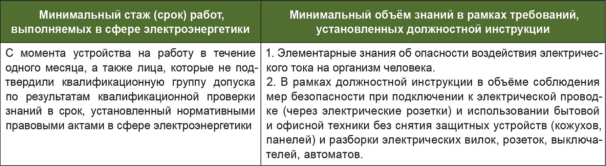
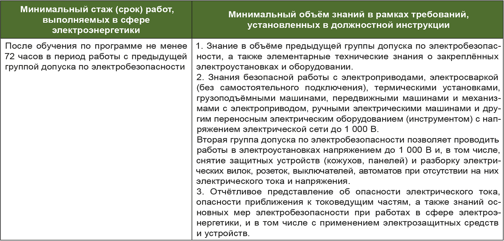
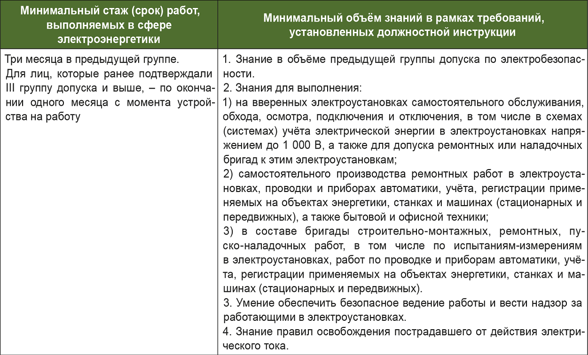
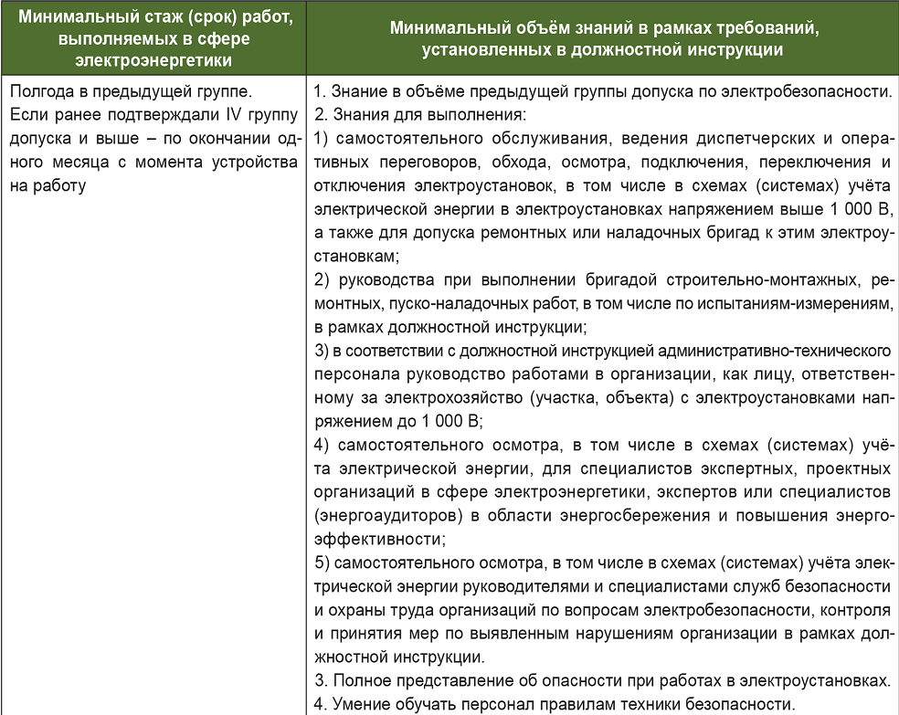
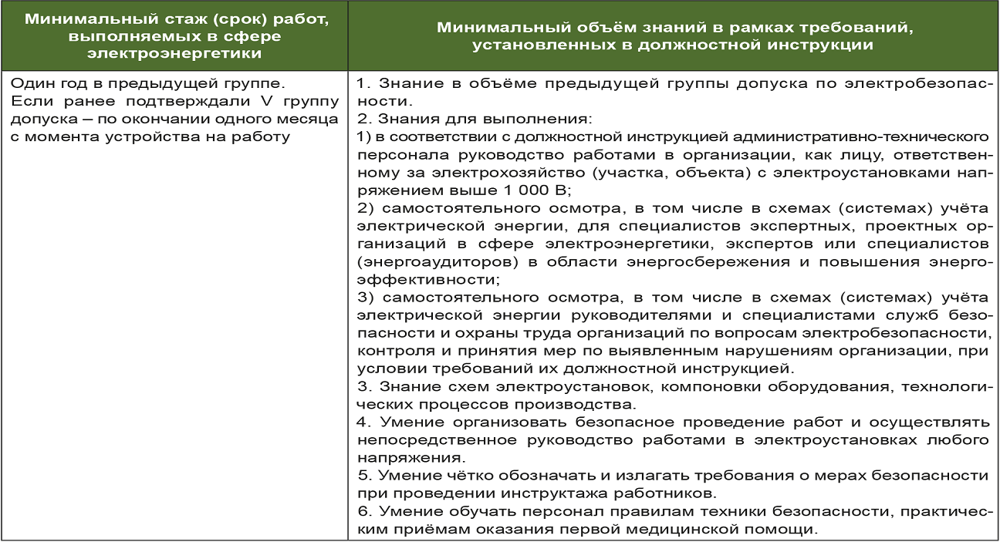

Глава 4: Организация электробезопасности на предприятии
4.1 Система управления электробезопасностью
Научные исследования в области анализа электротравматизма, разработка и внедрение новых более эффективных способов и средств защиты персонала от поражения электрическим током показывают, что решение проблемы обеспечения электробезопасности на предприятиях должно осуществляться на основе системного анализа и разработки системы управления электробезопасностью (СУЭБ).
Эксплуатация электрооборудования персоналом связана с риском электропоражения, который значительно возрастает при выполнении ремонтных, профилактических и пусконаладочных работ со снятием напряжения вблизи от токоведущих частей или без снятия напряжения. Также существует вероятность электротравматизма среди технического персонала, не связанного напрямую с эксплуатацией электроустановок. Поэтому основная цель внедрения СУЭБ – снижение электротравматизма во всех сферах производственной деятельности.
Система управления электробезопасностью (СУЭБ) представляет собой комплекс мероприятий, процедур и политик, направленных на обеспечение безопасности работников при выполнении работ с электроустановками и электрооборудованием. Основные элементы СУЭБ включают:
- Политика электробезопасности – основной документ, определяющий стратегические цели и задачи в области электробезопасности на предприятии. Она устанавливает обязательства руководства по обеспечению безопасности работников и формирует основу для разработки других элементов СУЭБ.
- Организационная структура – определяет распределение ответственности между различными подразделениями и должностными лицами за выполнение мероприятий по электробезопасности. Это может включать назначение ответственных лиц, создание комитета по безопасности и здоровья, а также комиссий по расследованию чрезвычайных происшествий.
- Процедуры и инструкции – включают разработку и внедрение правил безопасной эксплуатации электроустановок и электрооборудования. Они описывают порядок проведения технического обслуживания, реагирования на аварийные ситуации и выполнения профилактических проверок.
- Обучение и аттестация персонала – предполагает систематическое обучение сотрудников основам электробезопасности, теоретическим знаниям и практическим навыкам, а также аттестацию на право выполнения работ с электроустановками.
- Контроль и анализ – регулярный мониторинг соблюдения требований электробезопасности на рабочих местах, анализ инцидентов и рисков. По результатам анализа принимаются меры по совершенствованию системы управления.
- Постоянное совершенствование – СУЭБ является динамичной системой, которая адаптируется к изменениям в законодательстве, условиям работы и технологическим инновациям. Это включает обновление процедур, обучение персонала новым методам и технологиям, а также внедрение лучших практик.
Реализация системы управления электробезопасностью позволяет предприятиям эффективно управлять рисками, снижать вероятность электротравматизма и обеспечивать безопасные условия труда, что способствует защите здоровья и жизни работников.
4.2 Разработка и внедрение мероприятий
Разработка и внедрение мероприятий по обеспечению электробезопасности – это важный этап в создании эффективной системы управления электробезопасностью на промышленном предприятии. Этот процесс включает несколько ключевых шагов, которые направлены на минимизацию рисков и обеспечение безопасности работников.
- Анализ текущего состояния. Проведение анализа текущего состояния системы электробезопасности на предприятии. Это включает выявление уязвимых мест, рисков и недостатков, а также оценку уровня соблюдения требований безопасности. Такой анализ позволяет понять, где необходимо сосредоточить усилия.
- Определение целей и задач. Определяются стратегические цели и задачи в области электробезопасности, которые необходимо достичь. Цели должны быть конкретными, измеримыми, достижимыми, релевантными и своевременными (SMART), чтобы обеспечить их успешную реализацию.
- Разработка плана мероприятий. На основе анализа и определенных целей разрабатывается план мероприятий по обеспечению электробезопасности. План включает конкретные шаги, сроки выполнения и ответственных исполнителей, что способствует четкому и последовательному выполнению работ.
- Обучение персонала. Проводится обучение персонала по основам электробезопасности. Это может включать теоретические курсы, практические тренинги, семинары и инструктажи на рабочих местах. Обучение играет ключевую роль в предотвращении инцидентов.
- Внедрение технических средств защиты. Установка и внедрение технических средств защиты, таких как автоматические выключатели, предохранители, защитные экраны, заземляющие устройства и другие. Эти средства минимизируют вероятность возникновения аварийных ситуаций.
- Разработка процедур и инструкций. Создаются и внедряются процедуры и инструкции по безопасной работе с электрооборудованием и электроустановками. Эти документы содержат правила безопасности, порядок действий в случае аварий и чрезвычайных ситуаций, а также требования к техническому обслуживанию оборудования.
- Проведение аудитов и проверок. Регулярно проводятся аудиты и проверки системы электробезопасности для оценки ее эффективности. Аудиты помогают выявить возможные проблемы и недостатки, а также найти пути их устранения.
- Постоянное совершенствование. Система управления электробезопасностью должна постоянно совершенствоваться. Это осуществляется на основе опыта, анализа результатов, а также изменений в законодательстве и технологиях. Такой подход обеспечивает актуальность и эффективность системы.
Внедрение мероприятий по обеспечению электробезопасности требует согласованной работы руководства, специалистов по технике безопасности, инженеров и работников предприятия. Эти усилия оправданы, поскольку обеспечение безопасности на рабочем месте является ключевым аспектом устойчивого развития предприятия.
4.3 Роль руководства и персонала в обеспечении электробезопасности
Руководство и персонал играют ключевую роль в обеспечении электробезопасности на промышленных предприятиях. Их совместная работа направлена на создание безопасных условий труда, минимизацию рисков и предотвращение электротравматизма. Рассмотрим основные функции руководства и персонала в обеспечении электробезопасности:
- Руководство
- Определение стратегических целей и политики безопасности. Руководство определяет стратегические цели и политику безопасности на предприятии, включая приоритеты в области электробезопасности и обязательства по соблюдению законодательства и стандартов.
- Выделение ресурсов. Обеспечение необходимых ресурсов (финансовых, технических, человеческих) для реализации мероприятий по обеспечению электробезопасности.
- Поддержка и мотивация. Поддержка и мотивация персонала на соблюдение правил и процедур безопасности, создание безопасной культуры и атмосферы на предприятии.
- Обеспечение обучения и аттестации. Организация обучения и аттестации персонала по вопросам электробезопасности, а также его повышение квалификации.
- Контроль и анализ. Руководство осуществляет контроль за соблюдением правил и процедур безопасности, анализирует результаты деятельности по обеспечению электробезопасности и разрабатывает меры для совершенствования системы управления.
- Персонал
- Соблюдение правил и процедур. Персонал обязан соблюдать установленные правила и процедуры безопасной работы с электрооборудованием и электроустановками.
- Использование средств защиты. Работники должны правильно использовать предоставленные средства защиты, включая защитную одежду, средства индивидуальной защиты, а также технические средства (заземление, предохранители и т. д.).
- Соблюдение инструкций и процедур обучения. Персонал обязан участвовать в обучении по электробезопасности и строго соблюдать инструкции, полученные в ходе обучения.
- Сообщение о возможных угрозах и проблемах. Работники должны своевременно сообщать руководству о возможных угрозах безопасности или неисправностях оборудования для принятия соответствующих мер предосторожности.
- Участие в аудитах и обучении. Персонал должен активно участвовать в аудитах системы управления электробезопасностью и повышать свою квалификацию через обучение.
Роль руководства и персонала в обеспечении электробезопасности взаимосвязана и важна для создания безопасной рабочей среды на промышленных предприятиях. Совместные усилия способствуют предотвращению несчастных случаев и повышению эффективности работы.
4.4 Требования к персоналу
В соответствии с Правилами технической эксплуатации электроустановок потребителей (ПТЭЭП), все работники, чья деятельность связана с электроустановками (электрооборудованием), подразделяются на три категории:
- Электротехнический персонал. К этой категории относятся работники, выполняющие следующие
виды работ:
- Административно-технический;
- Ремонтный;
- Оперативный и оперативно-ремонтный.
- Электротехнологический персонал. Работники, деятельность которых не входит в состав энергослужбы предприятия, но связана с использованием электрооборудования.
- Неэлектротехнический персонал. Включает работников, выполняющих работы, не относящиеся к электротехническому или электротехнологическому персоналу, но которые при выполнении своих трудовых обязанностей подвержены риску поражения электрическим током.
Квалификационная проверка знаний является основным способом определения уровня профессиональной подготовки руководителей и специалистов организаций. Она необходима для присвоения, повышения или подтверждения группы допуска по электробезопасности. Проверка знаний подразделяется на три основных вида:
- Первичная проверка – проводится при приеме на работу или переводе на новую должность.
- Периодическая (очередная) проверка – проводится регулярно в установленные сроки.
- Внеочередная проверка – осуществляется при изменении условий работы или после выявленных нарушений.
Группа допуска по электробезопасности присваивается в соответствии с Правилами техники безопасности при эксплуатации электроустановок. Группы допуска определяют квалификационный уровень персонала и его знания безопасных методов работы с электричеством. Всего существует пять групп допуска:
- I группа допуска. Распространяется на неэлектротехнический персонал. Перечень профессий и
рабочих мест для этой группы определяется руководителем организации.

- II группа допуска. Присваивается электротехническому и электротехнологическому персоналу
организации. Условия присвоения группы включают минимальный стаж работы и объём знаний, регламентированные
нормативными документами.

- III группа допуска. Присваивается персоналу, деятельность которого связана с соблюдением
норм правил технической эксплуатации и правил безопасности. Для её получения требуется подтверждение знаний
и определённый стаж работы.

- IV группа допуска. Присваивается специалистам, чья деятельность связана с производством и
потреблением электрической и тепловой энергии, с соблюдением норм правил безопасности. Требует подтверждения
знаний и значительного стажа работы.

- V группа допуска. Наивысшая квалификационная группа, предназначенная для
электротехнического и электротехнологического персонала, обладающего глубокими знаниями и опытом работы.
Присваивается после проверки знаний и подтверждения условий стажа.

Группы допуска по электробезопасности и условия их присвоения установлены в приложении 1 к Правилам техники безопасности при эксплуатации электроустановок потребителей. Организация обязана обеспечить соответствие квалификационных знаний сотрудников требованиям, предъявляемым к их профессиональной деятельности.
4.5 Ответственные за безопасность
Работниками, ответственными за безопасное ведение работ в электроустановках, являются:
- Выдающий наряд, отдающий распоряжение, утверждающий перечень работ, выполняемых в порядке текущей эксплуатации.
- Выдающий распоряжение на подготовку рабочего места и на допуск к работам в электроустановках.
- Ответственный руководитель работ.
- Допускающий.
- Производитель работ.
- Наблюдающий.
- Члены бригады.
Выдающий наряд (отдающий распоряжение)
Этот работник отвечает за достаточность и правильность указанных в наряде мер безопасности, качественный и количественный состав бригады, назначение ответственных за безопасность и соответствие квалификационных групп по электробезопасности у всех членов бригады. Право выдачи нарядов предоставляется:
- Работникам административно-технического персонала с V группой (для электроустановок напряжением выше 1000 В) и IV группой (для электроустановок напряжением до 1000 В).
- Оперативному персоналу с IV группой, если это право закреплено письменным указанием по организации.
Выдающий разрешение на подготовку рабочих мест
Этот работник отвечает за:
- Дачу команд по отключению, заземлению оборудования и подтверждение их выполнения.
- Возможность безопасного осуществления операций с оборудованием.
- Координацию времени и места работы бригад.
- Правильность действий по включению коммутационных аппаратов, исключая подачу напряжения на рабочие места.
Ответственный руководитель работ
Назначается для работ в установках выше 1000 В из числа административно-технического персонала с V группой, а в установках до 1000 В – с IV группой. Этот работник отвечает за:
- Выполнение всех мер безопасности, указанных в наряде.
- Проведение целевого инструктажа членам бригады.
- Организацию безопасного ведения работ.
Допускающий
Назначается из числа оперативного персонала с группой IV (для установок напряжением выше 1000 В) и III (для установок до 1000 В). Отвечает за:
- Правильность и достаточность принятых мер безопасности.
- Проведение инструктажа членам бригады.
- Соответствие мер безопасности указанным в наряде.
Производитель работ
Отвечает за:
- Подготовку рабочего места и дополнительные меры безопасности.
- Проведение целевого инструктажа.
- Исправность и использование средств защиты.
- Сохранность ограждений, плакатов, заземлений.
- Контроль за членами бригады.
Наблюдающий
Назначается работником с группой III и отвечает за:
- Подготовку рабочего места в соответствии с нарядом.
- Целевой инструктаж членов бригады.
- Сохранность установленных заземлений и ограждений.
- Безопасность членов бригады от поражения электрическим током.
Члены бригады
Отвечают за соблюдение требований правил, инструкций по охране труда и указаний, полученных при допуске к работе и во время работы.
Совмещение обязанностей
Ответственный работник может совмещать следующие обязанности:
| Ответственный работник | Дополнительные обязанности |
|---|---|
| Выдающий наряд | Ответственный руководитель, производитель работ, допускающий (в электроустановках без местного оперативного персонала). |
| Ответственный руководитель | Производитель работ, допускающий (в электроустановках без местного оперативного персонала). |
| Производитель работ из числа оперативного персонала | Допускающий (в установках с простой схемой). |
| Производитель работ с группой IV | Допускающий. |
Численность и состав бригады
Численность бригады определяется условиями выполнения работ и возможностью надзора со стороны производителя работ. На одного работника с группой III допускается включение одного работника с группой II, но общее число таких работников не должно превышать трех. Оперативный персонал, находящийся на дежурстве, может привлекаться к работе в бригаде с записью в оперативном журнале.
4.6 Организационные работы в электроустановках с оформлением наряда-допуска
Наряд-допуск (наряд) – это задание на производство работы, оформленное на специальном бланке установленной формы. Наряд определяет содержание, место работы, время ее начала и окончания, условия безопасного проведения, состав бригады и лиц, ответственных за безопасное выполнение работы.
Наряд оформляется в двух экземплярах, а при передаче по телефону или радио – в трех экземплярах. В случае передачи наряда дистанционно выдающий заполняет один экземпляр, а принимающий по телефону или факсу заполняет два других, подтверждая их своей подписью. Наряд может быть оформлен в электронном виде и передан по электронной почте.
Наряд выдается на срок не более 15 календарных дней со дня начала работы. Продление наряда возможно один раз на срок не более 15 дней. При перерывах в работе наряд остается действительным. Право продления наряда имеет работник, его выдавший, или иной работник с соответствующими полномочиями.
Наряд хранится 30 суток после завершения работ, после чего может быть уничтожен. В случае несчастного случая или аварии наряд хранится в архиве вместе с материалами расследования. Учет работ по нарядам ведется в «Журнале учета работ по нарядам и распоряжениям».
Распоряжение
Распоряжение – письменное задание на производство работы, определяющее ее содержание, место, время, меры безопасности и работников, которым поручено выполнение работы, с указанием их групп по электробезопасности. Распоряжение имеет разовый характер и действует в течение одной рабочей смены. При необходимости продолжения работы распоряжение выдается заново.
Распоряжение выдается производителю работ и допускающему. Если допуск не требуется, распоряжение может быть выдано непосредственно производителю работ. Распоряжение можно выдавать на несколько однотипных работ или на работы на нескольких электроустановках. Допуск к работам обязательно фиксируется в «Журнале учета работ по нарядам и распоряжениям».
Примеры работ по распоряжению
Примеры выполнения работ по распоряжению:
- Ремонт электродвигателя, от которого кабель отсоединен и концы замкнуты накоротко и заземлены.
- Благоустройство территории ОРУ (скашивание травы, расчистка снега).
- Ремонт и обслуживание устройств проводной радио- и телефонной связи, осветительной электропроводки и арматуры на высоте до 2.5 м.
- Нанесение диспетчерских наименований и других надписей вне камер РУ.
- Наблюдение за сушкой оборудования, выведенного из работы.
- Обслуживание маслоочистительной аппаратуры при очистке и сушке масла.
- Работы на механической части вентиляторов, маслонасосов трансформаторов, компрессоров.
Единоличное выполнение работ
В электроустановках выше 1000 В по распоряжению единолично с группой III могут выполняться:
- Уборка территории ОРУ работником с группой III.
- Уборка помещений с электрооборудованием напряжением до и выше 1000 В работником с группой II (при огражденных токоведущих частях).
- Уборка помещений с установками до 1000 В работником с группой I.
Работы, выполняемые по распоряжению, выдаваемому оперативным персоналом подчиненному оперативному персоналу, фиксируются только в оперативном журнале. Записи включают начало, окончание работ, мероприятия по подготовке рабочего места, характер работы и состав бригады.
4.7 Производство работ по предотвращению аварий и ликвидации их последствий
Неотложные работы – это работы, выполняемые безотлагательно для предотвращения воздействия на людей опасного производственного фактора, который может привести к травме или другому внезапному ухудшению здоровья. Эти работы также включают устранение неисправностей и повреждений, угрожающих нарушением нормальной работы оборудования и электроустановок.
Условия выполнения неотложных работ
Неотложные работы продолжительностью не более 1 часа (без учета времени на подготовку рабочего места) могут выполняться:
- По распоряжению оперативным или оперативно-ремонтным персоналом.
- Под наблюдением оперативного персонала ремонтным персоналом в электроустановках напряжением выше 1000 В.
Если продолжительность работ превышает 1 час или для их выполнения требуется участие более трех работников (включая наблюдающего), работы должны проводиться по наряду.
Требования к персоналу
- Для электроустановок напряжением выше 1000 В старший работник из оперативного персонала должен иметь группу IV.
- Для электроустановок напряжением до 1000 В старший работник должен иметь группу III.
- Члены бригады, работающие в электроустановках напряжением до и выше 1000 В, должны иметь группу III.
Подготовка рабочего места
Перед началом выполнения неотложных работ должны быть выполнены все технические мероприятия по подготовке рабочего места, которые определяет выдающий распоряжение. Это включает:
- Отключение оборудования.
- Заземление токоведущих частей.
- Установку необходимых ограждений и предупреждающих знаков.
- Проверку готовности рабочего места к безопасному проведению работ.
Эти меры обеспечивают минимизацию рисков для персонала и безопасность проведения работ при устранении аварийных ситуаций.